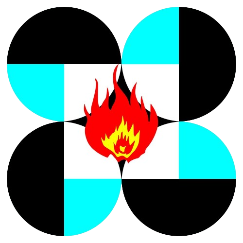

ACHIEVEMENTS
PISAY CARAGA HAS WON NUMEROUS AWARDS IN LOCAL, REGIONAL AND INTERNATIONAL COMPETITIONS. IT HAS A RECORD OF 331 GRADUATES COMING FROM THE CLASSES OF 2020, 2021, 2022 AND 2023. ITS SCHOLARS ARE PURSUING STEM DEGREE PROGRAMS IN THE COUNTRY AND ABROAD. TWO OF ITS SCHOLARS ARE ENROLLED IN THE UST LEAPMED PROGRAM FOR DOCTOR OF MEDICINE. TWO OF ITS SCHOLARS ARE STUDYING IN CANADA, ONE IN THE USA, ONE IN SOUTH KOREA, ONE IN NORWAY. ADDITIONAL SCHOLARS FROM THE CLASS OF 2023 ARE EXPECTED TO BE ENROLLED ABROAD.
(NEXT)